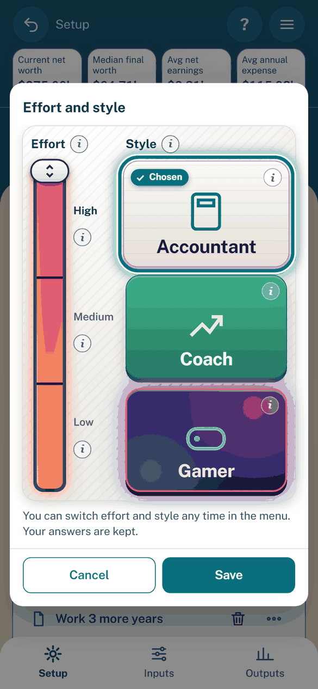

Effort and style
Purpose: choose how much the beta asks and how it shows results.
Effort sets how much the app asks. Style sets how results are shown. Neither changes a result.
The picker
Open the menu and tap Effort and style… (Change effort on the Low page).
Drag the energy bar, tap a level, or use the arrow keys. Tap one of the three style buttons.
Tap an (i) for a description. Tap Save to keep the choice, or Cancel to discard it.


The picker: effort bar above, style buttons below.
Choice |
What you get |
|---|---|
Low |
Pay, savings and monthly spending. See Low effort. |
Medium |
Adds retirement age, the 401k match, home, cars, loans and Social Security. See Medium effort and Add detail. |
High |
Every input. |
Accountant |
Numbers and tables. See Styles and cues. |
Coach |
Adds next steps and tips. See Coach: Next steps and risk comfort. |
Gamer |
Adds the garden, quests, awards and mini games. See Gamer. |
At first start the picker follows the Terms with a single Continue. Then the Walkthrough and a tour come. A new user starts at Low and Coach.
Each scenario keeps its own effort and style. Opening or importing one with different choices asks which to use: “Use the scenario’s”, “Keep mine” or Cancel.
A scenario saved before the pickers opens as High and Accountant.
Below High, Setup notes “Using defaults for N inputs” (hidden inputs that still match the example household) and “Detail added on N pages and inputs” with a Hide it button.
Medium effort and Add detail
At Medium, each Inputs pane, each list sheet and Setup’s Household inputs leave out the High-only inputs. Each ends with an Add detail row. It names how many inputs it would show, the first three, and how many are set.
Tap Add detail to show that pane’s High inputs.
Tap Hide detail to hide them again.
Hidden inputs keep their values and the model still uses them, so results are the same at every effort.
Medium also leaves out:
The Strategies inputs. A note and an Add detail row replace them.
Where surplus cash goes.
Future home and car purchases or sales.
The visit-based healthcare and Social Security estimate choices.
The picker lists every page and input added this way under Detail added. Each has its own Hide it button.
Low effort
At Low the app asks no home, car, loan or Medicare question. Inputs is one page of cards with no group chips.
Card |
What you enter |
|---|---|
About you |
Your age, whether a partner is part of the plan (then the partner’s age and filing status), your state. |
Pay |
Yours and your partner’s. |
Spending |
One monthly number, with a hint on what the plan counts on top of it. |
Savings |
Savings, Investments, Traditional 401k and Roth 401k. |
Children |
Yes or No, then how many and each age. A child you expect has a negative age. |
Retirement plan, Medical plan |
Yes or No. While on, a summary with Change. |
More detail |
A pointer to Medium effort, with Change effort. |
Setup’s Household card is hidden at Low. With two accounts of one kind, that kind is read-only until Medium.
Guided plans
Yes on the retirement or medical plan opens a pop-up with a live summary and its questions (401k share, employer matches, premium). Save keeps the answers as one Undo step; Cancel discards them. Change reopens it. No turns the plan off and keeps its other values.
Spending covers housing, cars and loans
At Low, monthly spending counts rent or mortgage, car and loan payments, property taxes, utilities and food. Health premiums are set with the medical plan. Nothing is counted twice.
When |
What happens |
|---|---|
A Low user answers or skips the spending question, or taps Skip for now on the welcome |
Homes, rent periods, cars and loans that are still the example household’s are removed. Undo my answers puts them back. |
A Medium or High scenario with its own homes, cars, loans or utility bills is switched to Low |
Nothing changes. The Spending card says “Your plan also counts … on top of this number” and offers Remove them (one Undo step). |
A Low user with none of them raises effort |
Nothing changes. Setup says the spending counts housing, cars and loans until the next effort change. |
You open or import a scenario |
Nothing changes. |